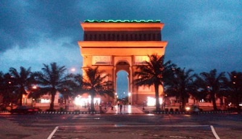
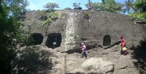
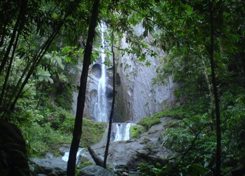
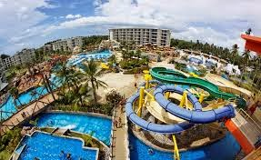
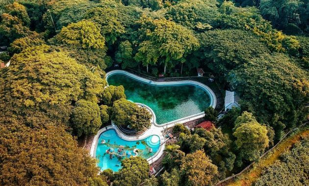

Monumen Simpang Lima Gumul
Destinasi ini merupakan salah satu tempat wisata di Kediri yang tengah populer dan jadi tempat nongkrong ngehits bagi warga Kediri dan sekitarnya. Monument ini memiliki desain yang unik, sekilas tampak seperti Monumen Arc De Triomphe yang ada di Paris. Meskipun demikian, setiap sudut monumen nyatanya memiliki keterkaitan dengan asal usul kota Kediri. Selain itu monumen ini juga memiliki view yang instagramable, sehingga tak heran banyak pengunjung yang suka berfoto selfie di sini.
Goa Selomangleng
Destinasi seru di Kediri selanjutnya ini merupakan salah satu situs bersejarah yang masih terjaga kelestariannya hingga saat ini. Goa Selomangleng tak hanya menyimpan cerita masa lalu tetapi juga pesona unik yang misterius. Nama Selomangleng sendiri memiliki makna “Batu Miring”, ini karena letaknya yang berada di lereng Gunung Kotok sehingga terlihat seakan-akan miring.
Air Terjun Dolo
Tempat wisata di Kediri yang selanjutnya ini tak hanya menyuguhkan penosa alam nan eksotisme tetapi juga mengajak Anda untuk sedikit berpetualang alam untuk bisa menikmatinya. Berada di kawasan lereng Gunung Wilis, tempat wisata tersebut ialah Air Terjun Dolo. Dengan ketinggian 90 meter, air terjun dengan arus air sedang ini menyuguhkan pesona yang cantik dari airnya yang gemercik.
Gumul Paradise Island
Sama seperti kota besar lainnya, Kediri juga memiliki destinasi seru untuk liburan keluarga seperti Gumul Paradise Island yang berlokasi di Simpang Lima Gumul ini. Tempat wisata di Kediri ini tak hanya menawarkan keseruan bermain di waterpark saja. Seperti kolam renang khusus untuk anak dan dewasa, kolam berarus, speed slide, body slide dan banyak lagi.
Taman Wisata Sumber Ubalan
Seperti namanya, Taman Wisata Sumber Ubalan ini menyuguhkan pesona wisata alam di tengah lebatnya hutan lindung yang penuh pepohonan tinggi menjulang. Tempat wisata di Kediri ini pun memiliki fasilitas yang terbilang cukup lengkap. Mulai dari kolam renang, kolam pemancingan, wana wisata, play ground, mini zoo, perahu air hingga area perkemahan ada ditempat ini. Bahkan tempat ini juga tersedia panggung hiburan serta gedung pertemuan untuk memenuhi kebutuhan pengunjung.